O matrice este o formă de organizare tabelară a unor elemente care au același tip, componentele acesteia putând fi identificate printr-un nume urmat (între paranteze drepte) de poziția acestora în cadrul vectorului. Identificarea poziției în cadrul matricii se realizează prin specificarea liniei și coloanei pe care se află elementul matricii. | 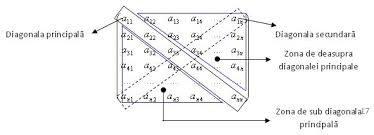 |
|
|
| Introducerea și afișarea elementelor matricii | 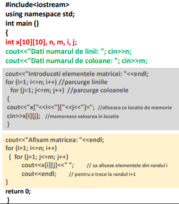 | 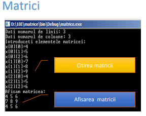 | 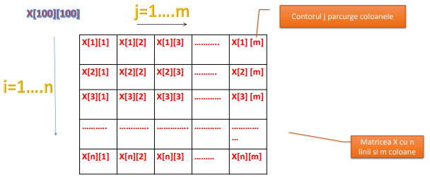 |
conţine elementele caracterizate de relaţia i+j=n+1. 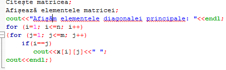 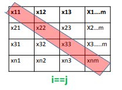 |
conţine elementele caracterizate de relaţia i+j=n+1. 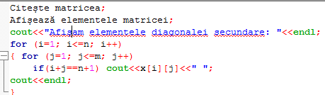 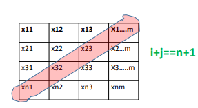 |
| 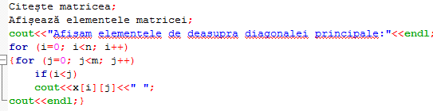 | 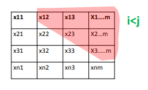 | Elementele de deasupra diagonalei principale sunt : a[1][2], a[1[3], a[1[4],…,a[1[n], a[2[3], a[2[4], a[2[5],…,a[2[n], …., a[n-1[n-1], a[n-1[n]. | . |
| 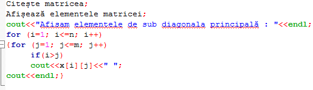 | 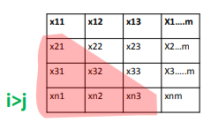 | Elementele a[2][1], a[3][1], a[3[2],…,a[4[1], a[4][2], a[4][3], …..,a[n][1], a[n][2], a[n][n-1] se află sub diagonala principală şi au între coordonate relaţia i > j. |
|
Pentru a copia elementele unei matrici a într-o matrice b ,se parcurge matricea a pe linii si coloane si se copiaza fiecare element în matricea b 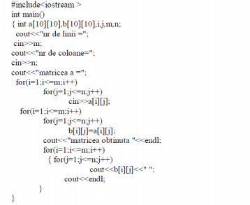 |
Să se afișeze matricea obținuta în urma eliminării penultimei linii, respectiv coloane din matricea dată.
|